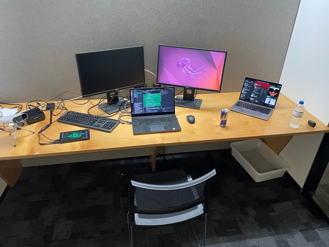

UTS Robotics Institute
Robotics Intern · January – May 2026
What were your expectations about your internship before you joined?
Before joining the UTS Robotics Institute, I expected a structured environment where tasks would be clearly defined and supervised closely – closer to a university lab assignment than a real research role. I anticipated working on well-scoped problems with frequent guidance and assumed the technical challenges would be incremental extensions of what I had already encountered in coursework.
What was the reality? How was it different from your expectations?
The reality was quite different. From early on, I was given genuine ownership over the detection pipeline I was developing – a computer vision and perception system for agricultural environments. There was no step-by-step instruction manual; problems had to be identified, framed, and solved largely independently. This extended to hardware work too, particularly deploying and optimising the inference pipeline on a Jetson Orin Nano, with a consequent field trial to verify system operation under the real conditions it will be used in. The atmosphere was collaborative rather than hierarchical – I was working alongside researchers and contributing to ongoing projects, not just executing assigned subtasks.

What lessons were the most important from your internship? Why were they important?
The two most important lessons I took away were learning to own a problem end-to-end and learning to communicate technical work clearly within a research team. In a university setting, problems come pre-packaged, while in research, defining the problem correctly is half the work. The ability to scope your own investigation, make defensible decisions, and then explain them to colleagues who have their own projects and priorities turned out to be just as technically demanding as the engineering itself. These are transferable skills that go beyond any single tool or framework.
After your workplace experience, what would you say your value proposition would be to an employer? How can you demonstrate this?
In terms of my value proposition to an employer, I can demonstrate an ability to build and optimise real computer vision systems under genuine constraints – not just in simulation or on a benchmark dataset, but on embedded hardware in both research and real-world environments. My capstone work on ARAP-based tracking and my Jetson deployment experience complement this directly. I can point to measurable outcomes: inference latency reduced from ~300ms to ~12ms allowed a collection of 100GB of real-time detection data for further pipeline refinement.
How did your internship influence the type of role in which you are interested?
The internship has meaningfully complicated my career direction… in a good way! Going in, I was set on moving into industry robotics and automation. Coming out, I am genuinely weighing a research or academic path. The experience of working at the boundary of what is solved and what isn’t, alongside researchers actively pushing that boundary, was something I found unexpectedly compelling. If I go into industry, perception engineering is clearly where I want to focus. If I pursue research, this internship has shown me what that environment actually looks like from the inside – and that I can operate in it.